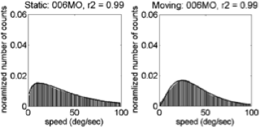
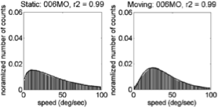

2015-08-10
What Accounts for Developmental Shifts in Optic Flow Sensitivity?
Background
- What is Optic Flow?
- How Does Optic Flow Sensitivity Develop?
What is Optic Flow?
- Structured pattern of visual motion generated by observer movement
- Radial, rotational, translational/laminar patterns

How Does Optic Flow Sensitivity Develop?
- Sensitivity at birth
- Infants more sensitive to fast, translational flow
- Adults more sensitive to slow, radial flow
Natural Scene Statistics of Optic Flow
- Raudies & Gilmore ICDL-EpiRob 2012
- Infants experience faster flow than mothers even when geometry, speed of locomotion equated.
- Raudies & Gilmore, Neural Computation, 2014
- Motion "prior" for infants faster than for mothers
- Empirical motion priors not "slow" as predicted by theory
This Study Asks
- What are the statistics of infants' optic flow experiences in more natural contexts?
- Do the statistics help explain development in sensitivity?
- Do cultural differences (home geometries, carrying practices, etc.) carry much weight?
- Are fast, translational flows common?
Approach
- Simulating changes in optic flow due to changes in body size & posture, geometry
- Empirical measurement of flow experienced in natural contexts
Theoretical Framework
- What changes in development or culture might influence optic flow?
- Posture: Walking vs. Crawling
- Distance to ground surface
- Head pitch relative to ground
- Geometry: Typical distance to surfaces, objects
\(\begin{pmatrix}\dot{x} \\ \dot{y}\end{pmatrix}=\frac{1}{z} \begin{pmatrix}-f & 0 & x\\ 0 & -f & y \end{pmatrix} \begin{pmatrix}{v_x{}}\\ {v_y{}} \\{v_z{}}\end{pmatrix}+ \frac{1}{f} \begin{pmatrix} xy & -(f^2+x^2) & fy\\ f^2+y^2 & -xy & -fy \end{pmatrix} \begin{pmatrix} \omega_{x}\\ \omega_{y}\\ \omega_{z} \end{pmatrix}\)
Parameters For Simulation
| Parameter | Crawling Infant | Walking Infant |
|---|---|---|
| Eye height | 0.30 m | 0.60 m |
| Locomotor speed | 0.33 m/s | 0.61 m/s |
| Head tilt | 20 deg | 9 deg |

Parameters for Simulation
| Geometric Feature | Distance |
|---|---|
| Side wall | +/- 2 m |
| Side wall height | 2.5 m |
| Distance of ground plane | 32 m |
| Field of view width | 60 deg |
| Field of view height | 45 deg |
Simulating Flow Fields

Flow Direction Distributions by Geometry & Posture

Flow Speeds By Geometry and Posture
\(\chi^2(20)\): ground: 920.8292078, room: 1476.1183605, side-wall: 958.7145051, and two-walls: 1110.3179808.
Mean Simulated Flow Speeds By Posture and Geometry
| Type of Locomotion | Ground Plane | Room | Side Wall | Two Walls |
|---|---|---|---|---|
| Crawling | 14.41 | 14.42 | 14.43 | 14.62 |
| Walking | 9.38 | 8.56 | 7.39 | 9.18 |
Empirical Measurements of Optic Flow
- First-person videos from head-mounted cameras
- 20 infants, 41 days to 13.2 mos
- Chennai, India & Bloomington, Indiana
- Data: http://databrary.org/volume/81
Cultural Differences in Segment Durations
Segment Durations
Normalized Durations as \(p\)(total-time)
Natural Scene Statistics for Optic Flow
- Selected 10 5 s segments/participant, both moving and stationary
- Estimated frame by frame flow fields
- Details in Raudies & Gilmore 2014
Speed Distributions
Comparing Shapes of (Trimmed) Speed Distributions
- Fit \(\gamma\) distribution to trimmed (0,100) speed histograms
\(f(x;k,\theta) = \alpha\frac{x^{k-1}e^{-\frac{x}{\theta}}}{\theta^k\Gamma(k)}\)
\(\alpha\), amplitude; \(\kappa\), shape; and \(\theta\), scale parameters.Illustrative Speed Histograms - 6 weeks
 
Illustrative Speed Histograms – 34 weeks


Illustrative Speed Histograms – 58 weeks


Fitted \(\kappa\) Parameters
Fitted \(\alpha\) Parameters

Fitted \(\theta\) Parameters
Summary: Empirical Flow Speed Effects
- Fast speeds (> 100 deg/s) common
- Moving ≠ Stationary
- Broad distribution: \(\kappa\), \(\alpha\)(moving) > \(\kappa\), \(\alpha\)(stationary)
- U.S. ~ India
Empirical Pattern Distributions
- Correlation with 'canonical' flow patterns
- radial
- rotational
- translational
Pattern Correlation Results

Pattern Correlation Results by Country
Moving Laminar ≠ Stationary Laminar in 13/22 infants.
Conclusions: Simulation
- Posture influences optic flow speeds & patterns
- Crawling: faster speeds, more translational flow
- Proximity to ground and pitch of head
- Geometry matters relatively little
Conclusions: Empirical Data
- Time stationary >> time in motion
- Time stationary declines with age (India)
- Fast speeds, broad speed distributions
- Individual differences in moving vs. stationary speed distributions
- Laminar flow >> radial or rotational flow, especially when stationary
- Replicates and extends Raudies & Gilmore '12, '14
Questions to Ponder
- How might optic flow experiences shape perception?
- Differences between self vs. other-produced motion?
- Influence of independently moving objects/people?
- How do optic flow experiences shape brain responses?
Children's responses to time-varying flow

Adults' reponses to time-varying flow

Stack
- Databrary, https://nyu.databrary.org/volume/81
- Access to identifiable data (e.g. videos) restricted
- Access agreement + institutional authorization
- Datayvu, http://datavyu.org
- Matlab
- RStudio, https://www.rstudio.com/
- R Markdown, http://rmarkdown.rstudio.com/
- GitHub, http://github.com/gilmore-lab/ICDL-EpiRob-2015